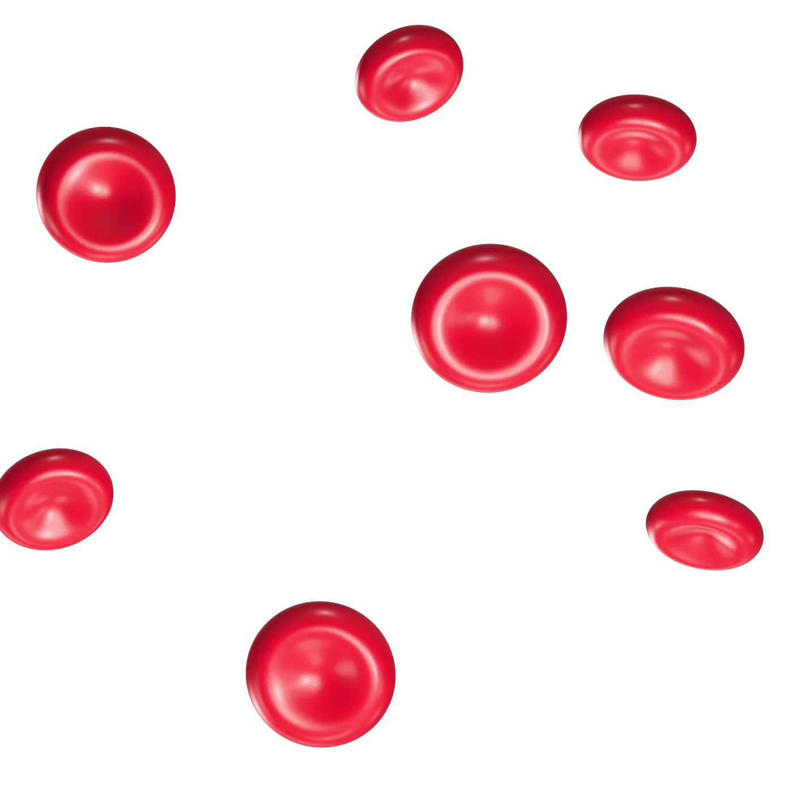
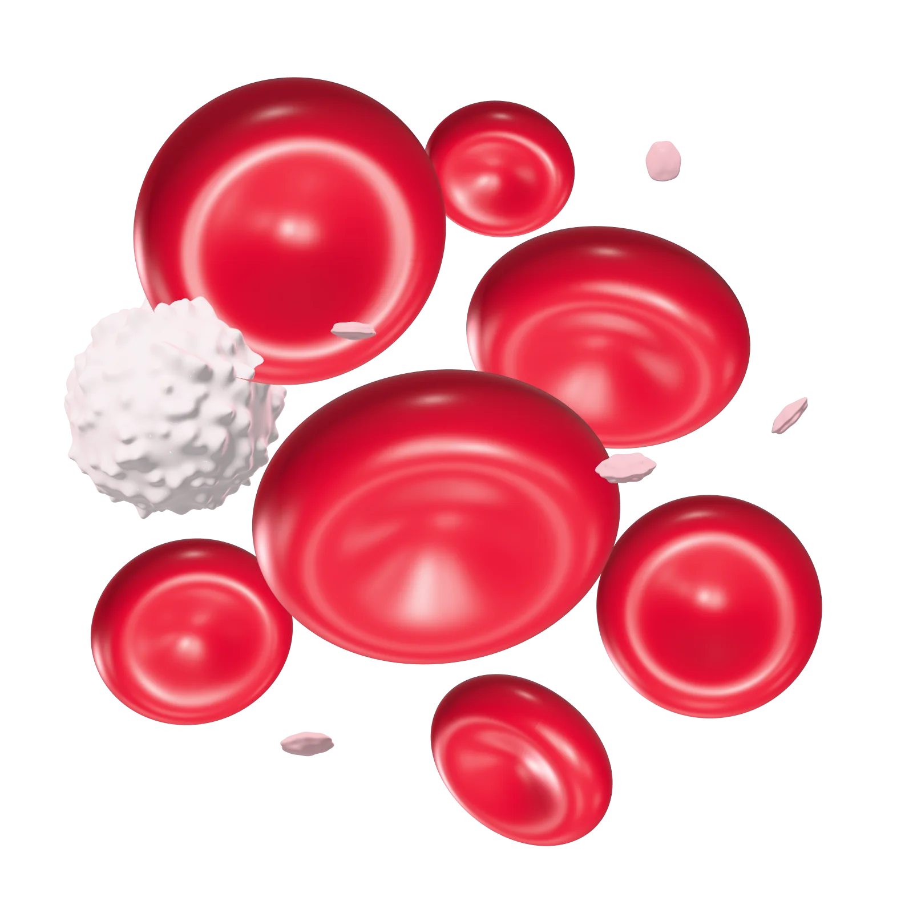
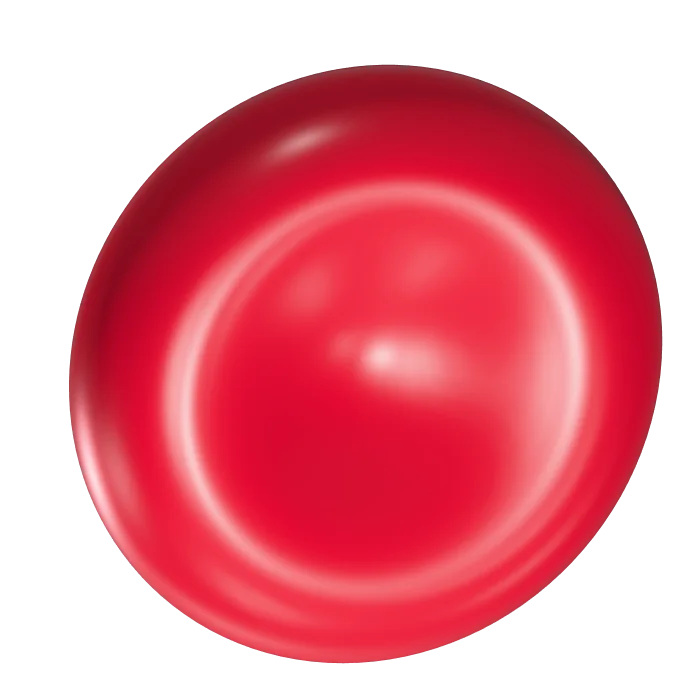
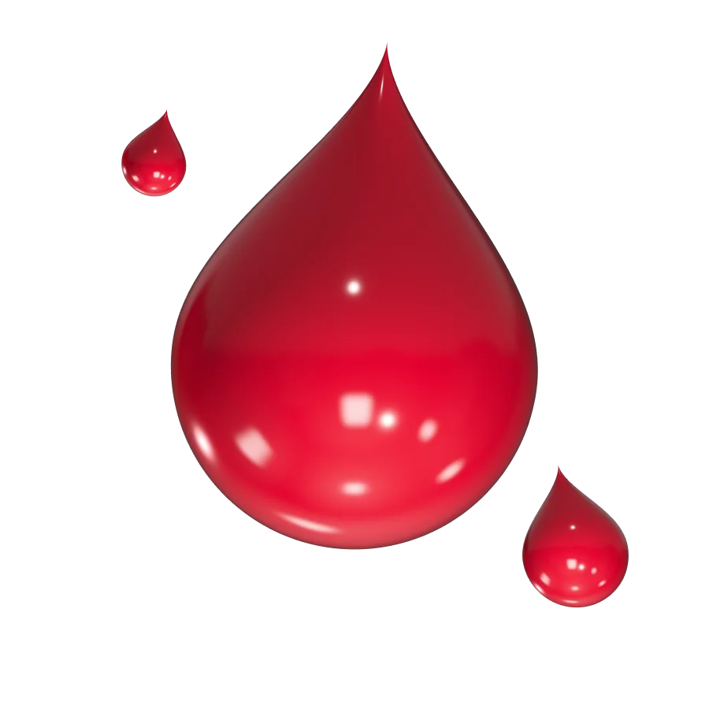
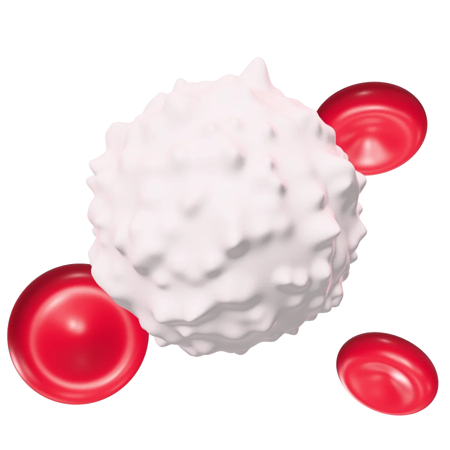
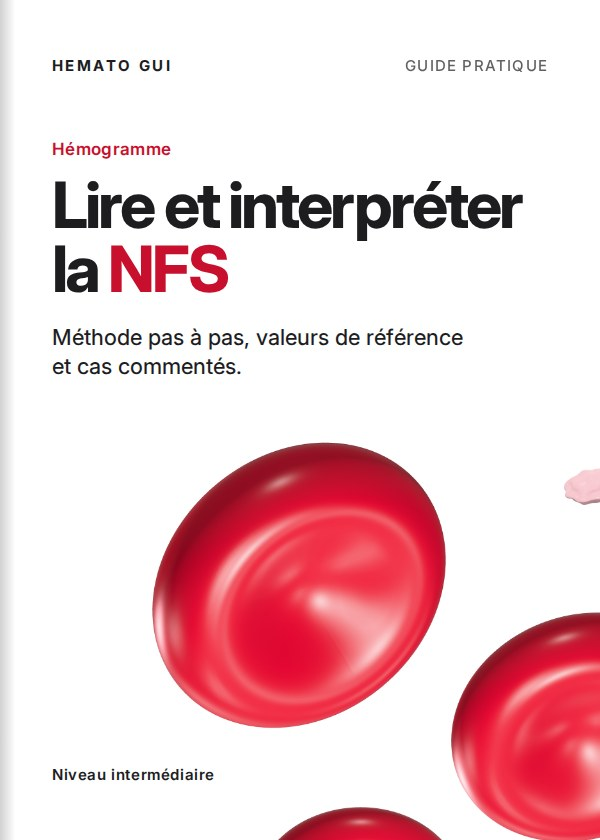
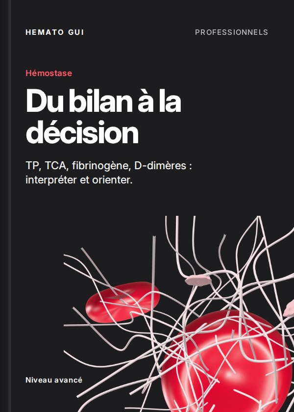
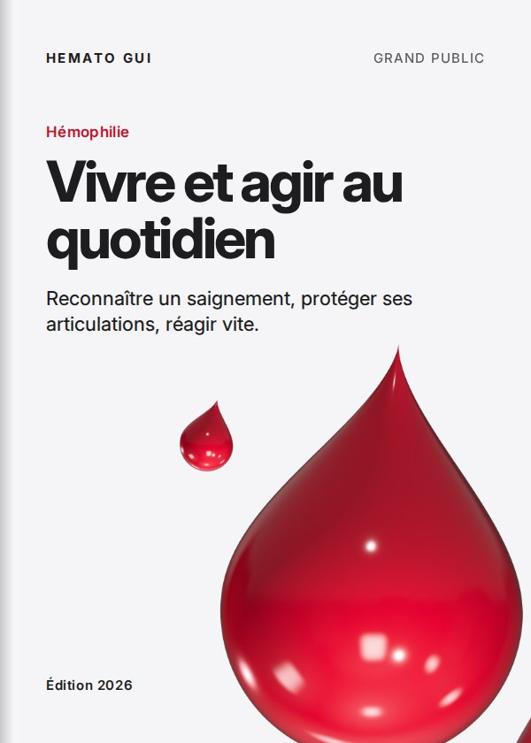

Plateforme d’hématologie· Guinée & Afrique francophone
Votre santé du sang mérite une expertise spécialisée.
HEMATO GUI — Informer, former et contribuer à une meilleure prise en charge des maladies du sang.
× 4 000




Hémoglobine
13,2 g/dL
Dans les valeurs de référence
Rendez-vous confirmé
Consultation drépanocytose
Mer. 14 oct. · 10 h 30
Comprendre, consulter, être suivi
Je suis professionnel de santé
Outils, protocoles, formations
Guides gratuits et payants
Quand consulter sans attendre ?
Hématologie
Nos domaines d’expertise
Des fiches claires pour comprendre, des spécialistes pour vous accompagner.
Priorité de santé publique
Drépanocytose
La maladie génétique la plus fréquente en Afrique. Crises, prévention, suivi de l’enfant et de la grossesse, traitements.
- Crises vaso-occlusives
- Dépistage néonatal
- Hydroxyurée
- Grossesse

Hémophilie et maladies hémorragiques
Hémophilie A et B, maladie de Willebrand : reconnaître un saignement et agir vite.

Cancers du sang
Leucémies, lymphomes, myélome : signes d’alerte, examens, traitements.

Hémostase et thrombose
Bilan de coagulation, thromboses, anticoagulants : comprendre et prévenir.

Diagnostic et exploration hématologique
NFS, frottis, myélogramme, électrophorèse : à quoi servent vos examens.

Je suis patient
Un parcours simple, du premier symptôme au suivi.
Tout ce dont vous avez besoin, au même endroit — et d’abord sur votre téléphone.
Je choisis mon problème
Drépanocytose, saignements, anémie, résultats d’analyse…
Je découvre les informations essentielles
Des fiches claires, relues par des spécialistes.
Je prends rendez-vous
En ligne en quelques clics, ou directement sur WhatsApp.
Je reçois une confirmation
Par WhatsApp ou SMS, une fois le créneau validé.
Je suis mon parcours médical
Rendez-vous, documents et conseils réunis dans mon compte.
Étape 2 sur 5
Prendre rendez-vous
Consultation
Hématologie
Drépanocytose
Hémophilie
Hémostase
Cancer du sang
Avis spécialisé
Octobre 2026
Lun12
Mar13
Mer14
Jeu15
Ven16
Heure
08:30
09:00
10:30
11:00
14:00
15:30
Continuer
Rendez-vous confirmé
Mer. 14 oct. à 10 h 30 · rappel la veille
- Prendre rendez-vous
- Demander une consultation
- Fiches médicales
- Documents à télécharger
- Conseils éducatifs
- Contacter sur WhatsApp
- Actualités
- eBooks
- Créer un compte patient
Les informations présentes sur ce site sont destinées à l’éducation et à la sensibilisation. Elles ne remplacent pas une consultation médicale.
Espace professionnel
Hématologie pratique, pour les soignants.
Protocoles, référentiels, cas cliniques, webinaires et outils d’aide à la décision, dans un espace sécurisé réservé aux professionnels de santé.
Maladie
Examen
Traitement
Âge
Urgence
Spécialité
Accès vérifié, réservé aux professionnels de santé
Outil
Interprétation de la NFS
Exemple
Hémoglobine
réf. 12 – 16 g/dL
9,1 g/dL
Bas
VGM
réf. 80 – 100 fL
71 fL
Bas
Leucocytes
réf. 4 – 10 G/L
6,4 G/L
Normal
Plaquettes
réf. 150 – 400 G/L
412 G/L
Élevé
Orientation
Anémie microcytaire avec thrombocytose réactive. À explorer : ferritine et bilan martial, puis électrophorèse de l’hémoglobine.
Outil d’aide : il ne remplace jamais le jugement clinique.
Interprétation de la NFS
Lecture guidée, seuils par âge et par sexe.
Formule leucocytaire
Valeurs absolues à partir des pourcentages.
Clairance de la créatinine
Cockcroft-Gault et CKD-EPI.
Scores IPSS-R / IPSS-M
Stratification des syndromes myélodysplasiques.
Bilan d’hémostase
TP/INR, TCA, fibrinogène : aide à l’interprétation.
Protocoles et algorithmes
Bibliothèque de protocoles et d’arbres diagnostiques.
Et aussi : cas cliniques · conférences et webinaires · formations certifiantes · quiz · documents PDF
eBooks
La bibliothèque HEMATO GUI.
Des guides écrits pour la Guinée et l’Afrique francophone, gratuits ou payants, à lire sur mobile.

Drépanocytose · Grand public
Le guide des familles
Collectif HEMATO GUI · 48 pages
Gratuit

Hémogramme · Intermédiaire
Lire et interpréter la NFS
Collectif HEMATO GUI · 86 pages
60 000 GNF

Hémostase · Avancé
Du bilan à la décision
Collectif HEMATO GUI · 124 pages
95 000 GNF

Hémophilie · Grand public
Vivre et agir au quotidien
Collectif HEMATO GUI · 40 pages
Gratuit
- Paiement sécurisé
- Téléchargement sécurisé
- Bibliothèque personnelle
- Mobile Money (Orange Money, MTN MoMo) : intégration prévue
Campagne · en cours
Septembre Rouge
Un mois pour parler des maladies du sang : dépistage, don de sang et accompagnement des familles, partout en Guinée.
Septembre
Mois de sensibilisation aux cancers du sang
19 juin
Journée mondiale de la drépanocytose
17 avril
Journée mondiale de l’hémophilie
14 juin
Journée mondiale du don de sang
Actualités
Actualités HEMATO GUI
Dépistage néonatal de la drépanocytose : pourquoi il change tout
Un diagnostic dès la naissance permet de prévenir les infections graves et d’organiser le suivi avant les premières crises.
Prise de rendez-vous
Consulter un spécialiste, en cinq étapes.
- Consultation
- Date
- Heure
- Coordonnées
- Confirmation